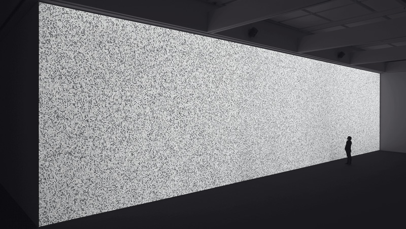
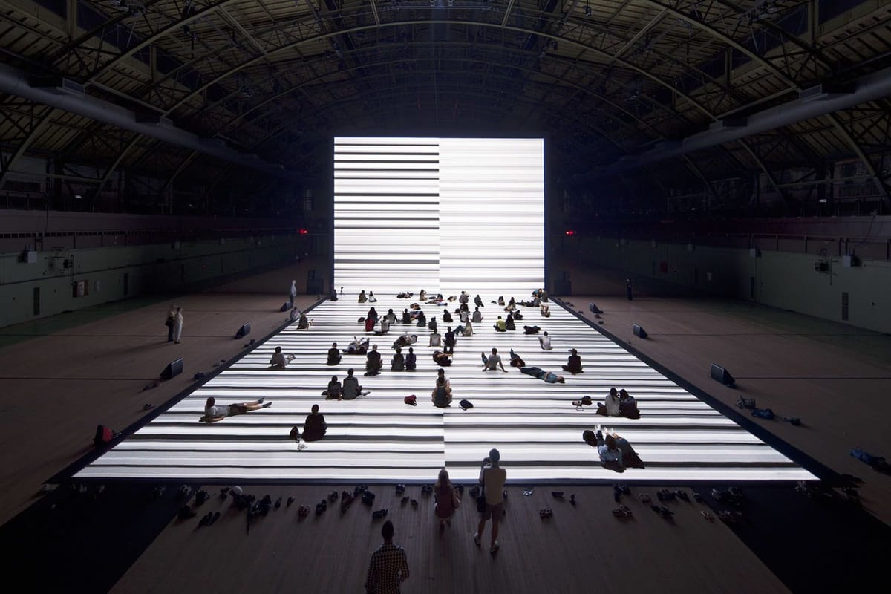

 
DATA.TRON [3 SXGA+ version]
Instalación audiovisual realizada en 2007. Esta se compone de múltiples pantallas de proyección que visualizan gran cantidad de datos, en formas de patrones y secuencias numéricas, generando una datos a través de la proyección digital, a través de un vasto campo de luz blanca, que en ocasiones se parece al ruido blanco de un televisor desafinado.
Test pattern
Otra instalación que realizó fue data.anatomy (civic). La cual utiliza datos biomédicos para explorar el cuerpo humano y su relación con la tecnología. Combina visualizaciones datos médicos

FOTO2
TEXTO2

FOTO3
TEXTO2